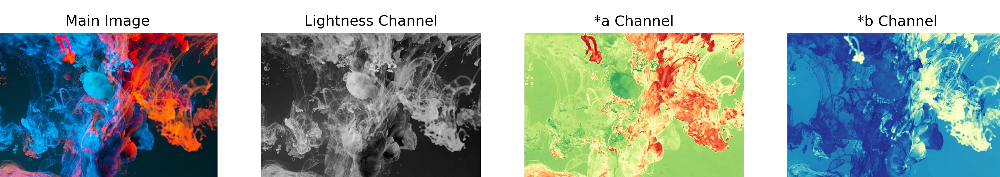

Ian Goodfellow, Father of GANs
Ian Goodfellow, Father of GANs
Colorization of Black and White Images using GANs
CO18319
Deepinder Singh
CO18321
Ganga Singh

CO18353
Tanveer Singh Kochhar
CO18319
Deepinder Singh
CO18321
Ganga Singh
CO18353
Tanveer Singh Kochhar
Colorizing black and white pictures is one of the most intriguing uses
of deep learning. Before the advent of GANs, researchers used vanilla
neural networks to do this job, but the results were neither realistic nor convincing.
In 2014, Ian Goodfellow came up with the notion of having two neural networks (Generator and Discriminator)
fight against each other, similar to how the minimax algorithm works.
This made the generation of photo-realistic images using neural networks.
Follow up thispersondoesnotexist.com
to get an intuition on the ability of GANs.
Ian Goodfellow, Father of GANs
Ian Goodfellow, Father of GANs Generator & Discriminator
The Generator model learns to create a realistic image from input noise, and the Discriminator model learns to differentiate between fake and real images. The generator's purpose is to deceive the discriminator by providing an image that looks identical to the reals. The discriminator's purpose is to estimate how realistic the generated image is. Both real and generated (fake) images of the same class are shown to the discriminator to tell the difference between the two.
 Block Diagram of GAN
Block Diagram of GAN RGB vs L*a*b Color Space
After reviewing numerous implementations and studies on image colorization with GANs, we discovered that the L*a*b color space is preferable to over RGB color space. Each pixel in RGB color space has three values that indicate how much Red, Green, and Blue it contains. The following image shows each channel of RGB color space separately.
 Channels in RGB Color Space
Channels in RGB Color Space Whereas in L*a*b color space each pixel has three numbers. The first number (channel), L, encodes the Lightness of each pixel, and it appears as a black and white image when visualized. The *a and *b channels represent the amount of green-red and yellow-blue in each pixel. The following image shows each channel of L*a*b color space separately.
 Channels in LAB Color Space
To train a colorization model, we first feed it a grayscale image and expect that it will colorize it. When we use L*a*b color format we can easily pass the L channel, and the model can churn out the other two channels *a and *b. Then we concatenate all of the channels to obtain a colorful image.
However, if you use RGB, we'll have to convert the image to grayscale format, feed it to the model, and hope it can produce three numbers, which is far more difficult because of many possible combinations of three numbers than there are with two. Predicting three numbers for each pixel requires choosing between 256 x 256 x 256 alternatives. However, predicting two numbers requires choosing between 256 x 256 options.
Methodology
We have used U-Net as the generator of our GAN with a pre-trained ResNet-18 backbone. We also pre-trained the generator for 20 epochs in a supervised and predetermined way to avoid the problem of "the blind leading the blind". The Implemented discriminator model is just a classifier built by stacking the blocks of Convolution Layer, BatchNormalization, and LeakyReLU as an activation function to determine if the input image is real or false.
To train our model, we used the dataset from Kaggle that consisted of 10800 images We implemented our code on Google-Colab as it provides access to GPUs. The model was trained for 30 epochs with a batch size of 16 to parallelize the data loading. The interface for the model is created using gradio module in python
 Interface of our Application
Interface of our Application
Results
The first row represents input black and white images. The second row represents generated colorized images by the trained generator in our GAN, while the third row represents the ground truth for generated images.


References
Colorizing black & white images with U-Net and conditional GAN
U-Net deep learning colorisation of grayscale images
Image-to-Image Translation with Conditional Adversarial Networks